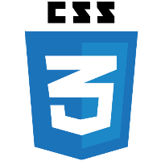

Aarti Jaisinghani
Full Stack Developer
SUMMARY
Mid level Full Stack Developer with experience spanning the entire Software Development Life Cycle, from design, development and implementation to testing and documentation. Current experience in updated development stacks through Nashville Software School.
TECHNICAL TOOLBELT
HTML, CSS, Javascript, Angular, jQuery, Bootstrap, C#, ASP .NET Framework, Visual Studio 2017, PHP, Drupal, Apache, SQL, MySQL, MS SQL Server Management Studio 2008 R2, SSRS, SSIS, Grunt, Git, GitHub, Browserify, Firebase, SQLite, ASP, MS Visual Studio .Net 2003, MS Visual Interdev 6.0, MS Visual Sourcesafe 6.0, Subversion, IIS 7.3
-

-

-

-

- 
-

-

-

-

-

-

-

-

-

PROFESSIONAL EXPERIENCE
NASHVILLE SOFTWARE SCHOOL
Software Developer
Nashville, TN
Apr 2017 - Sept 2017
Completed an immersive full-time software development bootcamp focusing on full-stack software development fundamentals. Solved problems in a simulated company environment with SCRUM methodology. Applied OOP fundamentals daily through group and individual projects. Created single-page JavaScript applications in the Angular framework incorporating HTML, CSS, Bootstrap, and Materialize. Worked with jQuery for JavaScript libraries. Automated bundling of modules, JavaScript linting, and compiling Sass with Grunt. Tracked and managed projects with Trello and GitHub Issue Tracking. Facilitated and contributed to Solution Design with white-boarding and wireframes. Created and edited MVC applications with C# and .Net Framework. Deployed applications through Firebase, GitHub, and Digital Ocean. Maintained source code/version control with Git/GitHub. Created servers and RESTful API’s with MVC.Net and Web API. Retrieved and stored database information in Firebase, SQLite and SQL Server.
DATA INTELLIGENCE GROUP
Web/SQL Developer
Nashville, TN
Nov 2013 - Sept 2016
Designed and implemented a customized web portal, based on an existing one, for a client who owned several physiontherapy clinics. This was done using PHP 5.3, MS SQL Server 2008 and IIS 7.5
Implemented a ticket tracking system using open source code and customized the same to suit company's needs. This was done using PHP 5.3, MySQL and IIS 7.5
MARKETLINX SOLUTIONS
Web Developer
Knoxville, TN
Dec 2002 - Nov 2008
Software implementation for multi-tier website in a team environment. Serviced the TEMPO website for 250,000 realtors via 27 contracts nationwide. Worked in tandem with fellow developers, dbas, database developers, quality assurance personnel and technical service representatives to ensure that a quality product was delivered to the client. This was done using Javascript, ASP, Transact SQL, C# and ASP .NET framework.
EDUCATION
B.S. Electrical Engineering
Mumbai University, India